BMW CE 04: The Suit & Tie Rocket Ship
With 4,700 miles (7500km) and 9 months under my belt, it's time for my long-term review of the BMW CE 04.
Introduction
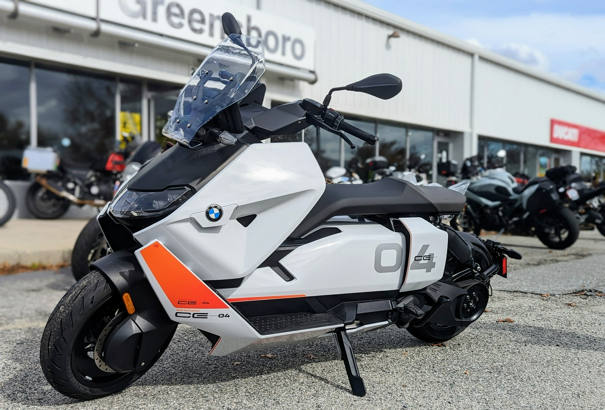
In 2022, BMW released the CE 04: a futuristic-looking spaceship in a sea of boring two-wheeled EVs. It made quite a splash, with BMW selling nearly 5000 in the first year. While European sales were strong, I estimate that only about 250 were sold in the USA during 2022. I may, in fact be the only CE 04 owner in North Carolina.
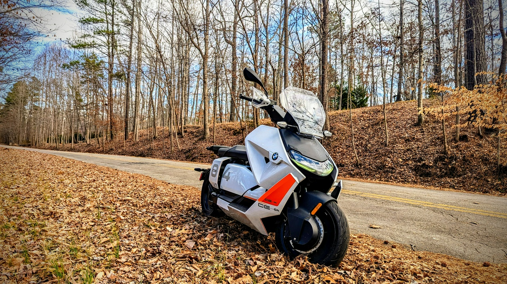
One question I often get from onlookers is: is that thing a scooter, or is that a motorcycle? While the CE 04 shares parts with their motorcycle line (S1000XR, F850GS, etc.), it has a floorboard instead of foot pegs, so BMW calls it a scooter. With the transition to electric, there is no other difference between a scooter and a motorcycle. Scooters also generally have an area under the dash where you can place your legs or groceries, but the CE 04 does not.
While the CE 04 is the most fun I've had on two wheels, it is also the personification of compromise. It's heavy, but due to the exceptionally low center of gravity, it's far easier to handle than the equally heavy R1200GS. Rather than using new electric technologies like a hub motor, the CE 04 reuses well-tested components. Somehow, it is still the most efficient EV in its class (WMTC 3b). It's got more range than you need for the city, but less than you may want for touring.
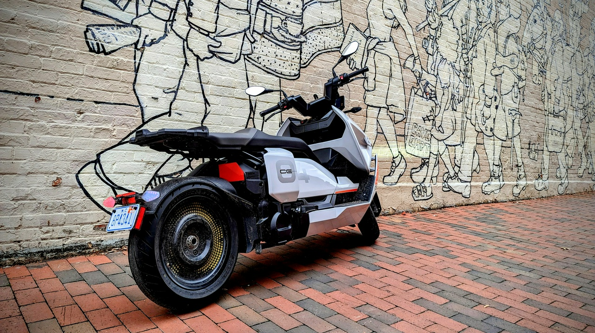
Who should get this bike?
If you are looking for a fast, fun, practical utility bike, have access to a power outlet at home, and live within 30 miles (50km) of another EV charger (see the Plugshare map): skip the rest of this review and go buy a CE 04 now.
If you ride primarily in urban or suburban areas, I can't think of a better bike than the CE 04.
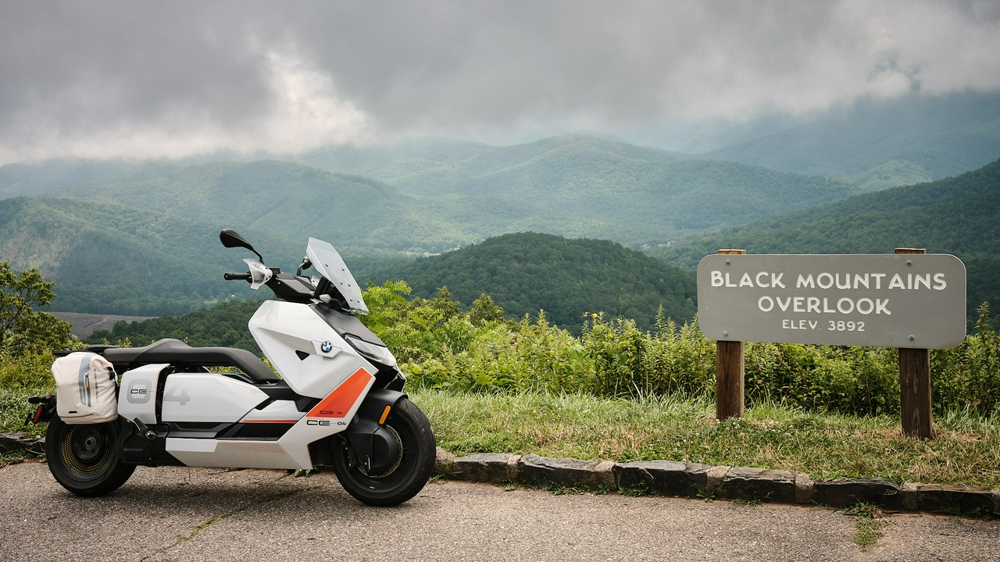
Who should steer clear of it?
If you want to participate in long group rides or want to venture out on day-long rides without micro-managing charging stops: check out Energica or Verge Motorcycles instead.
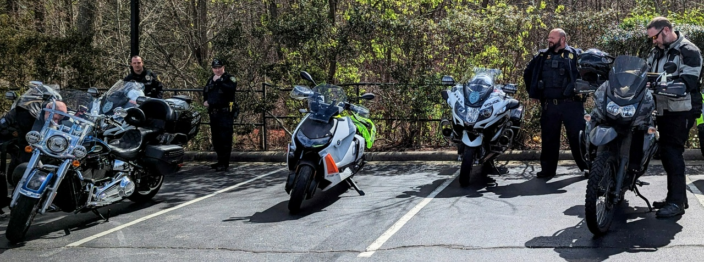
Specs
- Top Speed: 78mph
- Approximate Range:
- 75 miles @ 35mph / 120 km @ 60km/h
- 65 miles @ 45mph / 105 km @ 70km/h
- 60 miles @ 55mph / 95 km @ 90km/h
- 40 miles @ 70mph / 65 km @ 115km/h
- Acceleration: 0-30mph (0-50km/h) in ~2s
- Maintenance: Every 2 years or 6200 miles (10000km)
- Battery: 8.9 kWh total (8.5 kWh usable)
- Effective charge time: ~1 hour @ 30A (240V) with the "Quick Charge" option
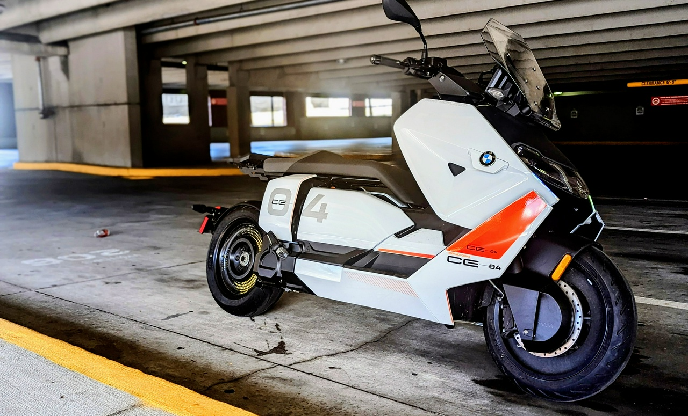
What's Hot, What's Not?
Keeping in mind that I am using the CE 04 as both a utility vehicle and a sport touring vehicle in North Carolina:
Hot:
- Brisk acceleration
- Agile & easy to ride
- Inexpensive to fuel ($1.15 where I live)
- Always waking up to a full tank
- Lack of engine noise and vibration makes it easier to tune into your surroundings
- Leg protection
- Reverse gear
- Heated seat & hand-grips
- 30L of under-seat storage
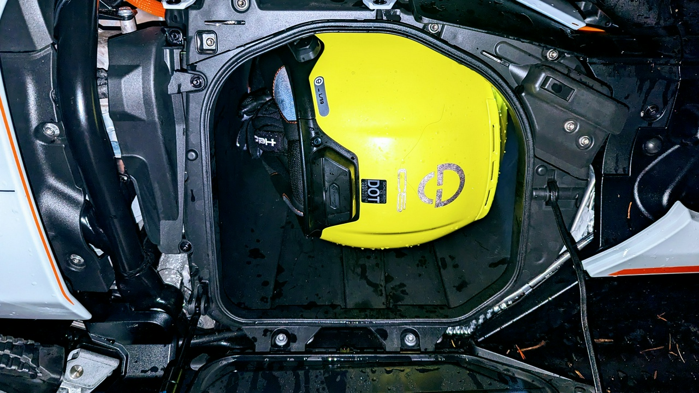
Not so hot:
- Range anxiety is real
- Seats are uncomfortable for multi-hour rides
- AC charging only; no support for DC fast chargers.
- Fragile rear indicator lights
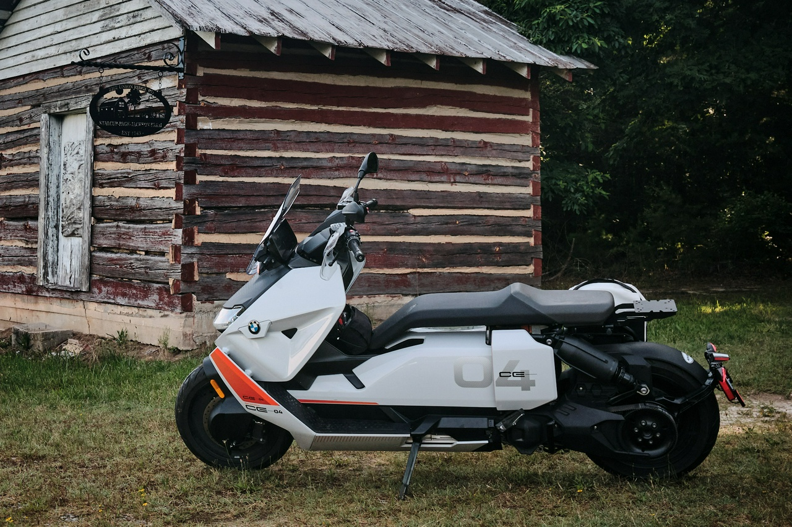
That Acceleration Tho
The CE 04 accelerates like a bat out of hell. If you crank the throttle all the way in "Road" or "Dynamic" mode, it will calmly and quietly reach 30km/h (18mph) before the first second is up. The lack of any perceived stress from the scooter when launching it from an intersection is uncanny. The traction control system limits the earliest stage of acceleration to avoid lofting the front wheel or throwing a passenger off the back.
The acceleration still pulls aggressively through 60 km (37mph), enough to leave anything short of a supercar in the dust when leaving an intersection. After 72 km (45mph), the acceleration is no longer shocking and feels like a regular modern vehicle.
Leaving everyone else behind at a green light is the most enjoyable part of owning the CE 04.
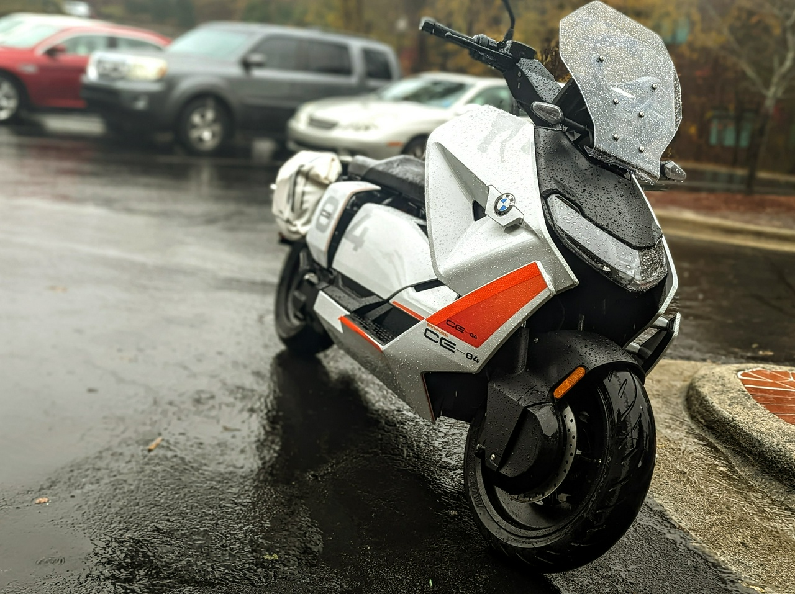
How does it ride?
The BMW CE 04 rides really well, especially considering its weight. The center of gravity on this bike is easier lower than anything BMW has ever produced, which makes it a far more enjoyable experience to take this bike into town than the GS I used to have.
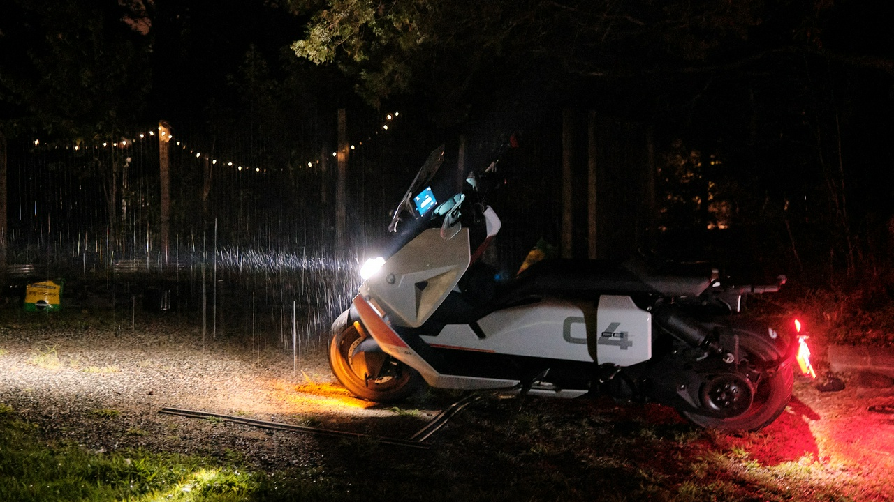
I've ridden the CE 04 in gravel, double-track, cities, highways, rain, flooded roads, and even briefly on ice. So far, the biggest handling surprise has been how competent this bike feels in gravel. The bike is also good on the highway or two-up, where it behaves much better than a F650GS and nearly as good as a R1200GS.
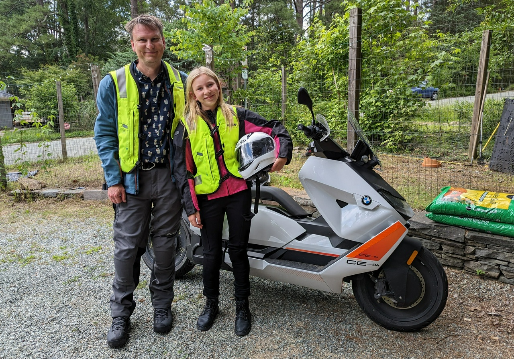
I can only find two faults with the bike handling:
- The suspension is good, but you may periodically hit the travel limit (110mm front, 92mm rear) on a rough road
- The steering of the CE 04 feels more easily influenced by high-speed crosswinds than other bikes
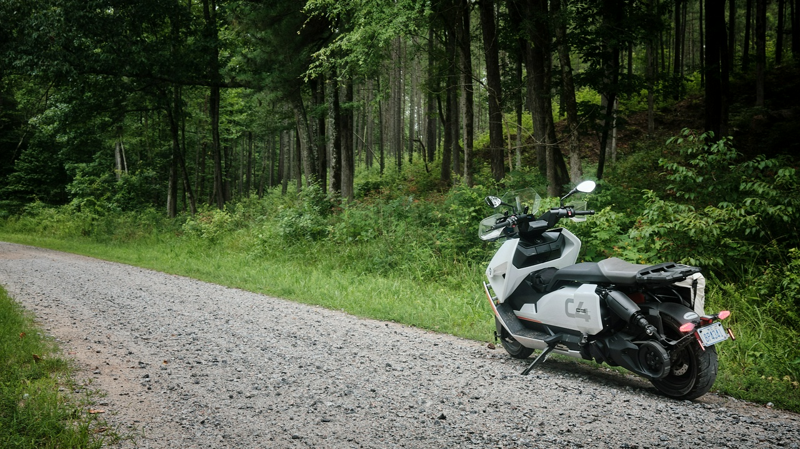
The Electric Experience
The best two things about having an electric vehicle are:
- Near-zero maintenance
- Never having to visit a gas station
The worst parts are:
- The fear of exceeding your range
- The fear of arriving at a broken charger
It was only on my first multi-day trip with the CE 04 that I finally mastered the art of dialing up efficiency as needed. If you find yourself in a situation where you need to stretch your range, the following recipe is good to squeeze an extra 10-15% out of the scoot:
- Travel at 5mph (8km/h) less than the speed limit
- Use "Eco" Mode
- Avoid the brakes
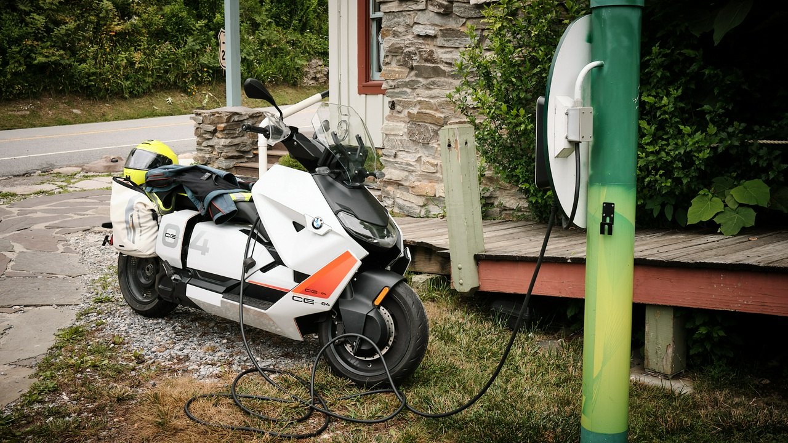
I was surprised to learn that power usage has a cubic relationship with velocity:
power = 0.5 * density_of_air * velocity^3 * drag coefficient * surface area
This is much more noticeable on a two-wheeled EV than any other type of vehicle because of the high drag coefficient (>1 versus 0.23 in a Tesla Model Y), low energy density, and because they are highly efficient at slow speeds, whereas internal combustion engines are not. Even a small difference in speed dramatically impacts the range of EVs, especially a two-wheeled one.
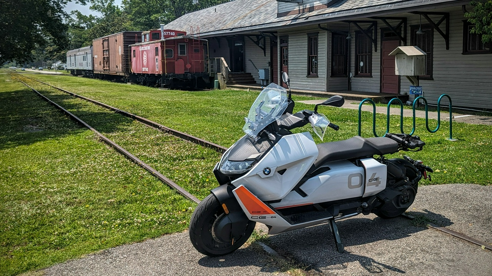
I've observed a 23% range difference between "Dynamic" and "Eco" modes on the same stretch of road an hour apart. While the Dynamic mode has ~20% stronger regenerative braking than Eco, I'm skeptical of its effectiveness on a two-wheeled EV due to the relatively low inertial weight. The primary efficiency difference between the Evo/Rain and Road/Dynamic modes is due to the dampening of the acceleration curve.
Regarding the fear of arriving at a broken charger: I've now charged at 66 different locations and have only once had to adjust my route due to an unavailable charger. The key to avoiding charger disappointment is to look stations up on PlugShare ahead of time: if the most recent review doesn't reflect a successful charge, don't count on having one yourself.
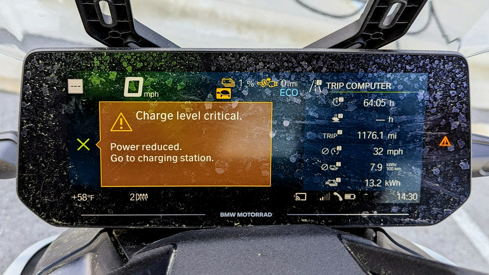
Like most battery-powered devices, it takes about the same time to charge 20-80% as it does from 80-100% due to increased resistance from the battery. My average charge time at public chargers is 30 minutes (20-60%), but if I need to change up to 100% to make it somewhere, I'll grab a coffee and let the bike sit for an hour.
It is worth noting that the BMW CE 04 is only compatible with AC (alternating current) chargers, like what you have at home. While this means you can charge it from any 110V or 220V power source, it means that it isn't compatible with the faster DC (direct current) chargers. Due to this incompatibility, even with an adapter, the CE 04 will not charge at Tesla Superchargers or ElectrifyAmerica chargers. In the United States, the lack of DC support means roughly 15% of chargers are incompatible with the CE 04.
On the plus side, the various apps for looking up chargers allow you to select AC or DC. 99% of the free chargers are AC. The CE 04 works wonderfully with Tesla Destination Chargers, but you'll need to pack a TeslaTap Mini adapter to use them.
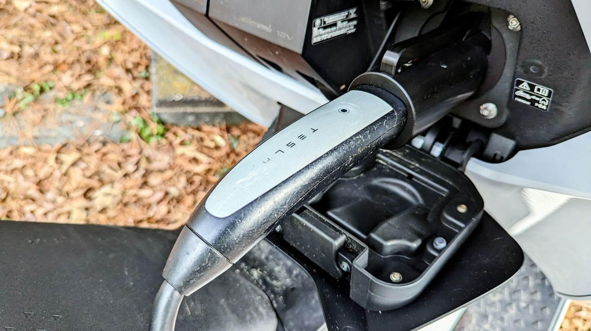
As the BMW CE 04 is slow at refueling compared to traditional two-wheeled bikes, group rides longer than 50 miles can be awkward. It doesn't help that group rides tend to encourage riding faster than the speed limit, which impacts your range.
Getting Connected
While the CE 04 does not require a cell phone to operate, you will need it if you want the giant 10.25" screen to show navigation instructions; you will need to install an Android or iOS application and connect your phone to your bike via Bluetooth. Good thing the scooter comes with a USB-C charging slot -- the CE 04 even has a fan-cooled location for stowing your phone.
There is no support for Android Auto, CarPlay, or any other mechanism to display maps from your phone to the console. If you want Navigation, you have to use the BMW Motorrad Connected app, which isn't all that terrible.
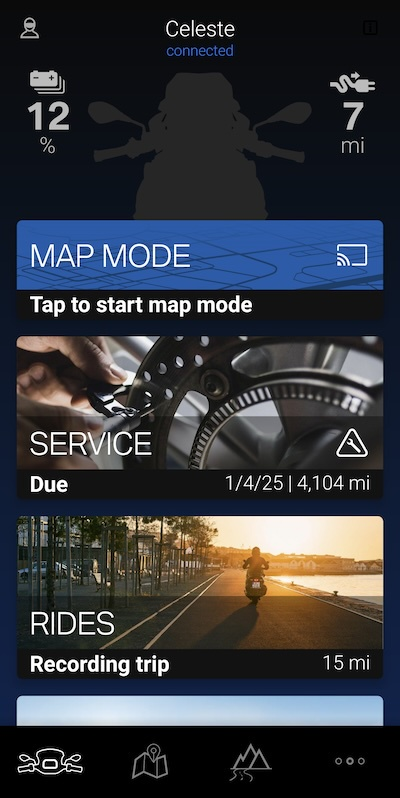
The best features of the BMW-connected software are:
- You can set the preferred "Windiness" for your route
- Maps work offline
- It records a GPS route of every ride, along with the state-of-charge, ABS, and traction events.
The worst features are:
- It will not tell you how much range to expect at your destination
- It will not warn you if the destination exceeds your range
- It will not route you to a charging stop along the way
- It does not show chargers on the map
- Address lookups are sluggish and interrupted by Bluetooth connectivity changes
- If you have your phone setup as a hotspot, it will fail to display maps on your console
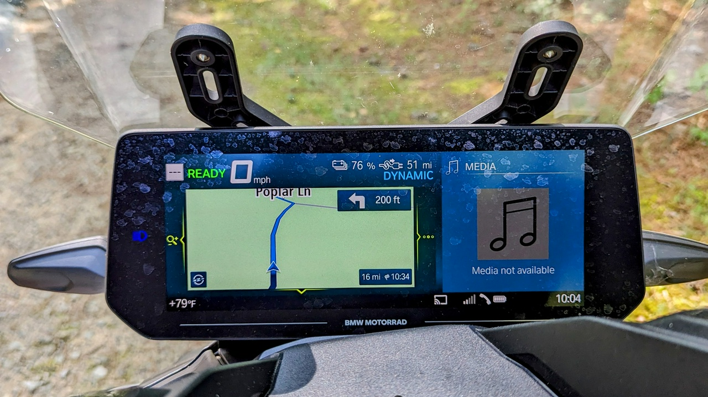
Does it Tour?
Hell, yes, it tours.
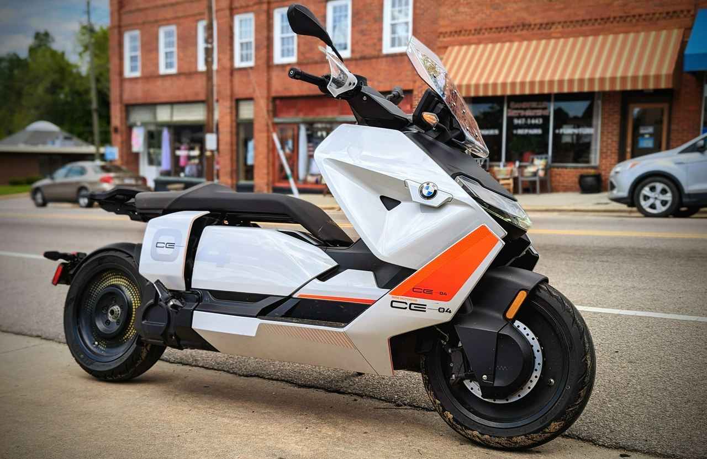
You can treat the BMW CE 04 as an exotic electric sport-touring machine, within reason. Due to the recharge times, the longest you can travel within 24 hours is about 400 mi/650km. My longest single-day ride has been 333 mi/530km, and my longest 3-day trip has been 650 mi/1050km.
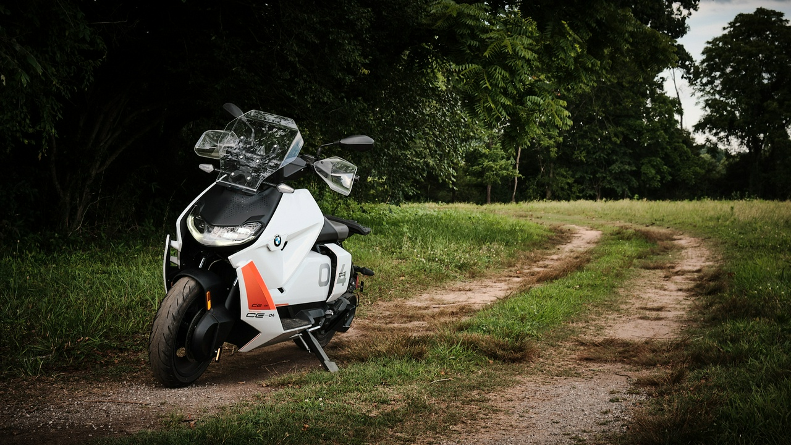
Touring with the BMW CE 04 takes planning, but visiting small towns with tiny independent charging stations in pedestrian-friendly spaces has been surprisingly rewarding. Traveling at a slower speed to these little electrical oases has provided a more exciting travel experience than I ever had with the F650GS Dakar or R1150GS. By preferring slower travel speeds and making loads of coffee stops, touring on the CE 04 feels similar to a bicycle tour at 3X speed.
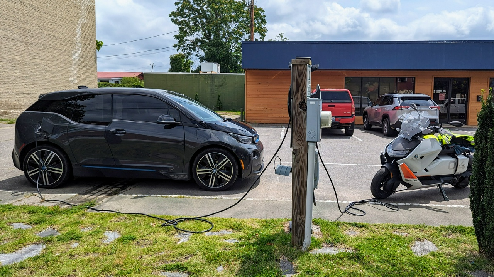
You can find chargers even in North Carolina's one-stoplight towns: Goldston to Star. The limited range of the CE 04 requires planning to locate them, but you can go a long way with ABRP (ABetterRoutePlanner) and PlugShare. ABRP does not know about the CE 04, but it's possible to simulate one by selecting the Zero SDS ZF 7.2 + PT and setting the reference consumption to 190 Wh/mi @ 65mph.
The weakest spot for touring on the BMW CE 04 is the seat. I am still looking for a seating position that is comfortable for more than 4 hours. For my pillion, it's uncomfortable after an hour. I may consider buying an Airhawk seat in the future.
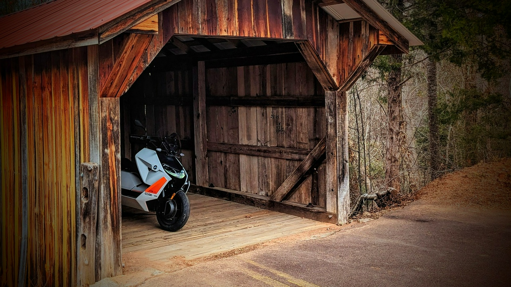
Making the CE 04 mine
I've made a handful of changes to the bike to make it more comfortable:
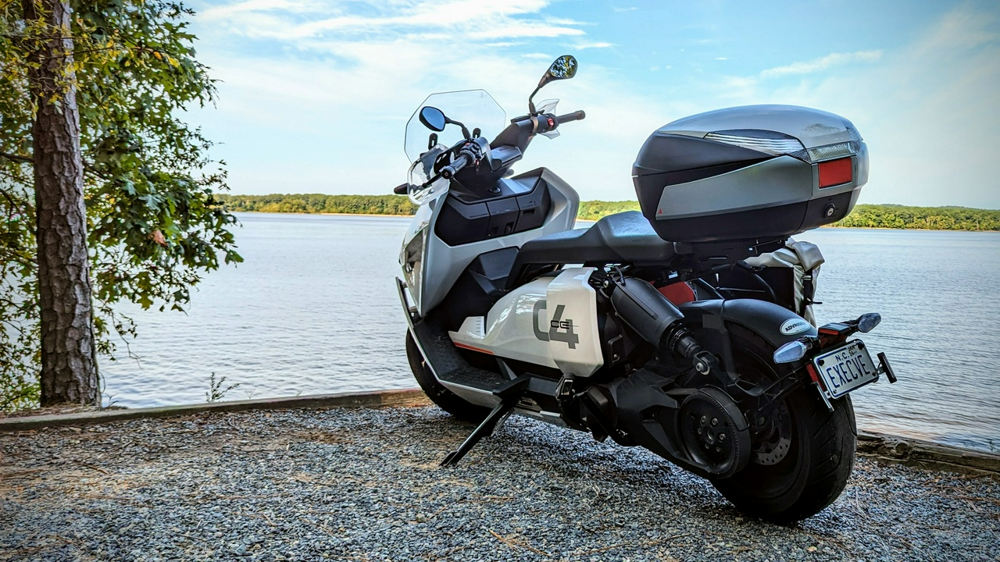
- Wunderlich handguards: Increased protection and decreased heat loss from the heated handgrips when it's cold.
- Shad SH48 top case: to carry helmet & gear for a passenger.
- Skene lights: significantly improve visibility for the drivers around me
- 2x2 Cycles Moto Bicycle Carrier: to carry a bicycle on the back (warning: beware of clearance problems with the standard front-wheel mount to your turn signal indicator)
- Wunderlich Winter Muffs: to keep my fingers warm even when it's below freezing
- Helix Handlebar Bag - Velcroed to the space under the dash, holds my camera, first aid kit, and TeslaTap Mini.
- Reinforced turn signal indicators: (a tie wrap)
I've been happy with all of these so far. There are many CE 04 accessories available to the EU market that may never show up in the USA, such as the Wunderlich Rain Skirt.
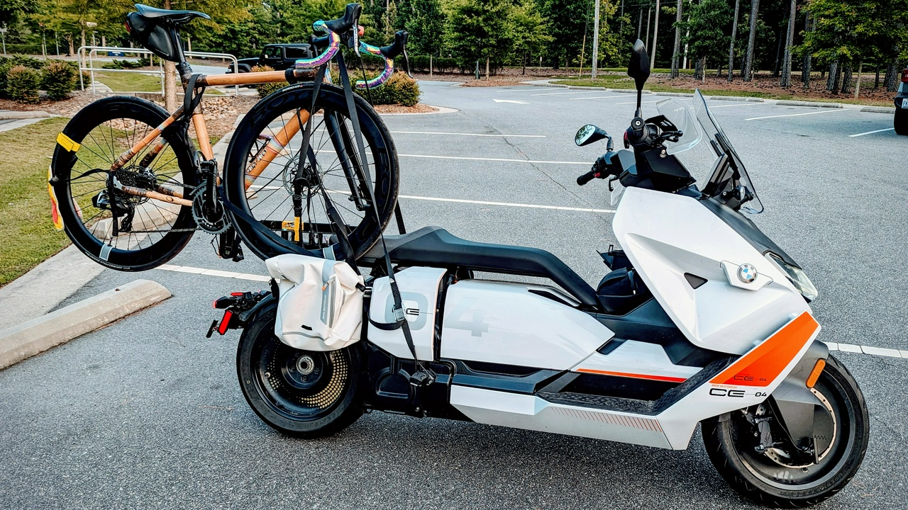
Maintenance
Unsurprisingly, the maintenance requirements of the BMW CE 04 are minimal. There is no engine oil that needs changing, and with the regenerative motor braking, the brake pads are, for the most part, relegated to emergency stops. I am not a mechanic, but this is the rough maintenance schedule I am going by:
- 750 miles: Initial "break-in" service (final drive fluid change, belt tension check)
- Every 4500 miles: replace the front tire
- Every 6200 miles: replace the rear tire, final drive fluid change, belt tension check
- Every 20000 miles: replace the belt
- Every 50000 miles: replace brake pads
- Every 10000 miles: replace brake rotors
- Every 2 years: replace brake fluid
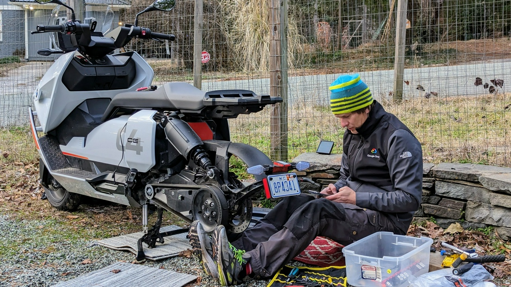
As with their gas-burning bikes, BMW wants you to stop by a dealer every 6000 miles for maintenance. IMHO, that's excessive for an electric vehicle, especially given that the mechanics in the USA are not trained to work on the CE 04. If you ever find yourself wanting to turn off the giant "MAINTENANCE DUE" pop-up on the console, it's quickly done with an ODB2 dongle and the MotoScan phone app.
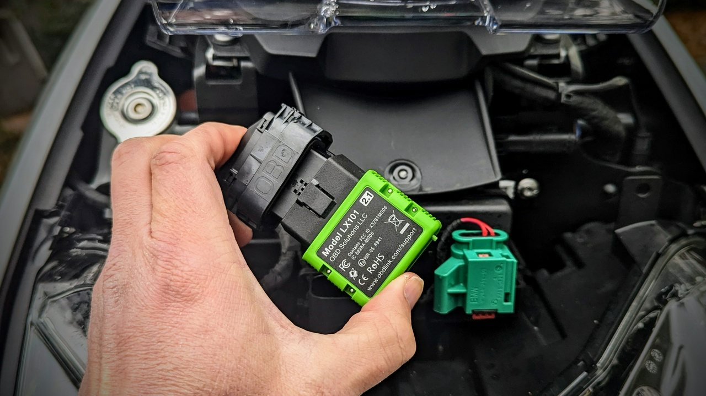
One unexpected quirk about the CE 04 is that it burns through front tires more quickly than the rear, opposite of most two-wheeled vehicles and 4-wheeled EVs.
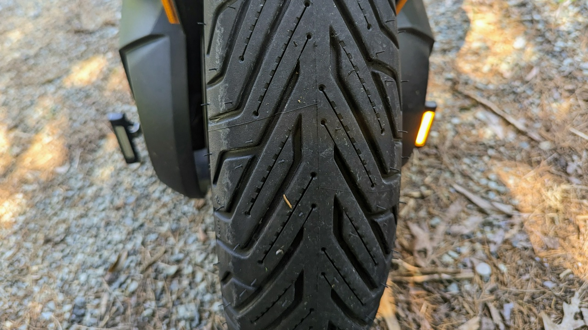
Room for Improvement
Roughly in priority order:
- A long-range version, like the BMW C-Evolution
- Support for DC charging (NACS) to broaden charger compatibility
- Automatic routing to chargers in navigation mode
- Touring-friendly seats
- Reinforced indicators
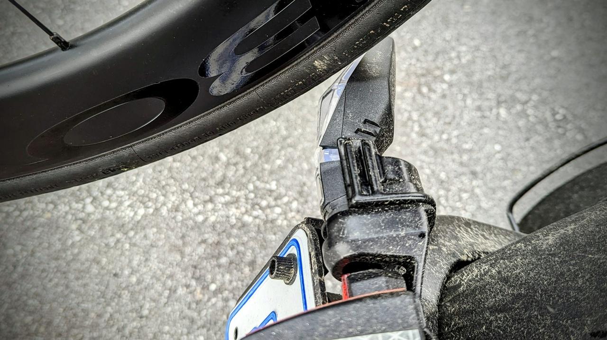
Conclusion
It isn't for everyone, but for me, the BMW CE 04 is a nearly perfect vehicle. It's great for errands, such as pizza pickups and school drop-offs, and fun outings, such as lunch with friends and exploring the countryside.
I'd buy the CE 04 again in a heartbeat. If BMW released a version with 20mi/30km more range, I'd buy it too.
If you want to know more, drop by the BMW Scooters Forum, where everyone is exceptionally friendly and helpful.
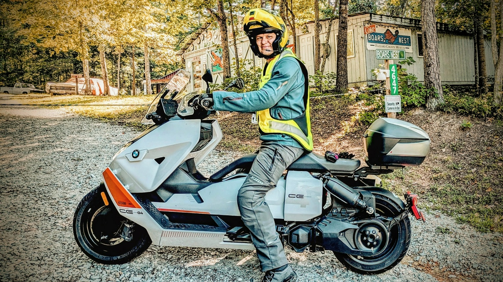